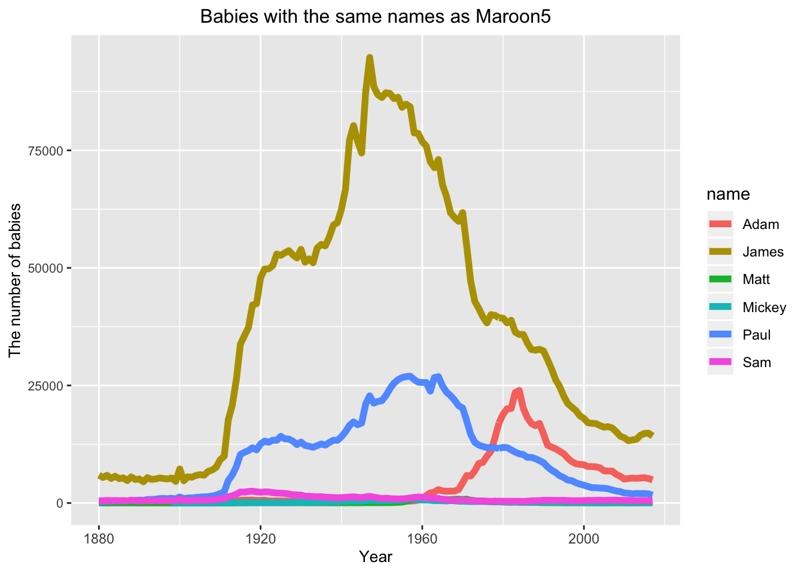
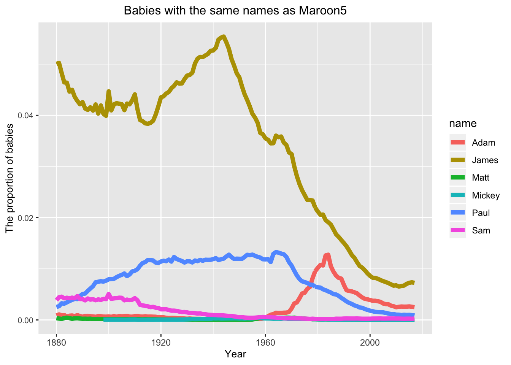
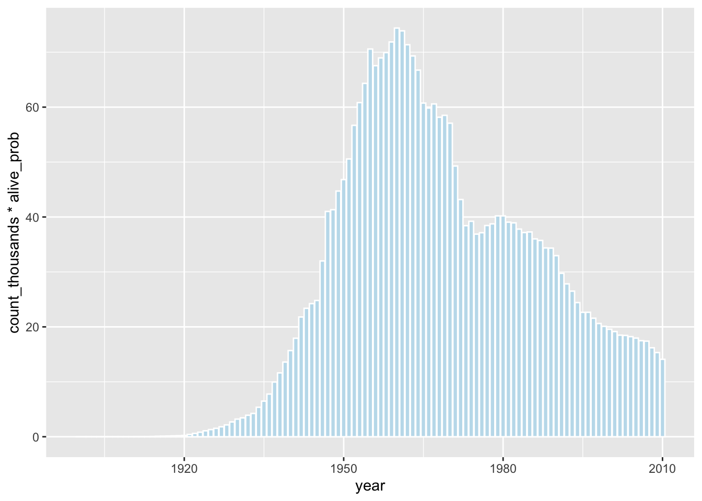
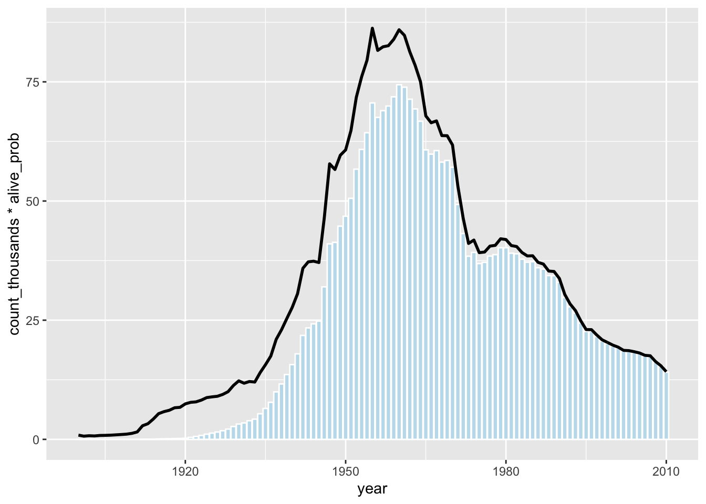
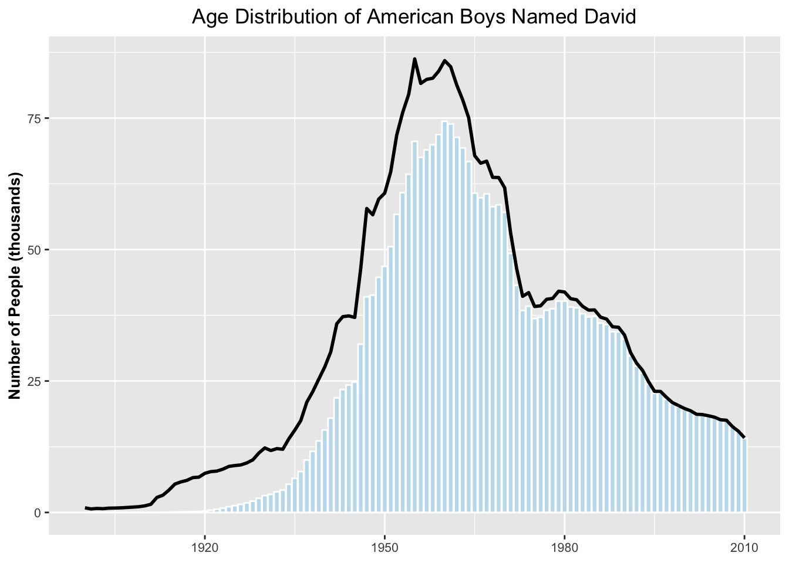

Plot.ly specializes in online dynamic data visualizations. I use babynames package as an example to show you how to explore the data set with babies with the same names as Maroon5.
library(babynames)
library(plotly)
library(tidyverse)head(babynames)## # A tibble: 6 x 5
## year sex name n prop
## <dbl> <chr> <chr> <int> <dbl>
## 1 1880 F Mary 7065 0.0724
## 2 1880 F Anna 2604 0.0267
## 3 1880 F Emma 2003 0.0205
## 4 1880 F Elizabeth 1939 0.0199
## 5 1880 F Minnie 1746 0.0179
## 6 1880 F Margaret 1578 0.0162summary(babynames)## year sex name n
## Min. :1880 Length:1924665 Length:1924665 Min. : 5.0
## 1st Qu.:1951 Class :character Class :character 1st Qu.: 7.0
## Median :1985 Mode :character Mode :character Median : 12.0
## Mean :1975 Mean : 180.9
## 3rd Qu.:2003 3rd Qu.: 32.0
## Max. :2017 Max. :99686.0
## prop
## Min. :2.260e-06
## 1st Qu.:3.870e-06
## Median :7.300e-06
## Mean :1.363e-04
## 3rd Qu.:2.288e-05
## Max. :8.155e-02Filter the data to grab boy babies with Maroon5 names.
Maroon5 <- babynames %>%
filter(name %in% c("Adam","Jasse","Mickey","James","Matt","Paul","Sam") & sex == "M")Plot the number of babies with each Maroon5 name with ggplot.
Maroon5.plot.n <- ggplot(data = Maroon5,
aes(x = year, y=n,color = name)) +
geom_line(size =2) +
ggtitle("Babies with the same names as Maroon5") +
xlab("Year") + ylab("The number of babies") +
theme(axis.text.y = element_text(size=8),
axis.title = element_text(size=10),
plot.title = element_text(size=12,hjust = 0.5))
Maroon5.plot.n 
Plot the proportion of babies with each Maroon5 name with ggplot.
Maroon5.plot <- ggplot(data = Maroon5,
aes(x = year, y = prop, color = name)) +
geom_line(size=2) + ggtitle("Babies with the same names as Maroon5") +
xlab("Year") + ylab("The proportion of babies") +
theme(axis.text.y = element_text(size=8),
axis.title = element_text(size=10),
plot.title = element_text(size=12,hjust = 0.5))
Maroon5.plot
Plot.ly can convert any ggplot2 object into plotly object using the “ggplotly()” function.
ggplotly(Maroon5.plot.n)ggplotly(Maroon5.plot)You can hover over specific data-points or you can also compare values for all lines at one x value.
I know you might think these plots are too simple and now let’s create a more complicated plot with ggplot and ggplotly.We will use the make_babynames_dist() function in the mdsr package to add some more convenient variables to our dataset and to filter for only the data that is relevant to people alive in 2014.
library(mdsr)
BabynamesDist <- make_babynames_dist()
head(BabynamesDist)## # A tibble: 6 x 9
## year sex name n prop alive_prob count_thousands age_today
## <dbl> <chr> <chr> <int> <dbl> <dbl> <dbl> <dbl>
## 1 1900 F Mary 16706 0.0526 0 16.7 114
## 2 1900 F Helen 6343 0.0200 0 6.34 114
## 3 1900 F Anna 6114 0.0192 0 6.11 114
## 4 1900 F Marg… 5304 0.0167 0 5.30 114
## 5 1900 F Ruth 4765 0.0150 0 4.76 114
## 6 1900 F Eliz… 4096 0.0129 0 4.10 114
## # … with 1 more variable: est_alive_today <dbl>
First we need to filter the data so that we only have babies with the name David who are male.
david <- BabynamesDist %>%
filter(name =="David" & sex == "M")
name_plot <- ggplot(data = david)
Now we will plot the number of David’s born each year who are estimated to be alive on January 1,2014.We will get that estimate by multipling the number of Davids born in a year by the probability that a person from that year will be alive on January 1,2014.
name_plot <- name_plot +
geom_bar(stat = 'identity', aes(x=year,y=count_thousands * alive_prob),
fill = "#c1dfed",
colour = "white")
name_plot
Now we will add the line for the number of Davids born each year to our plot.
name_plot <- name_plot + geom_line(aes(x = year, y=count_thousands),
size =1)
name_plot
We can also update our axis labels.
name_plot <- name_plot +
ylab('Number of People (thousands)') +
xlab(NULL) +
theme(axis.text = element_text(size = 8),
axis.title = element_text(size = 10,face = "bold"),
plot.title = element_text(hjust = 0.5)) +
ggtitle("Age Distribution of American Boys Named David")
name_plot
Now,we can use ggplotly!
ggplotly(name_plot)
When you finish reading this blog, I believe that you have some clues to make plots with plotly.Just use it in your daily work!